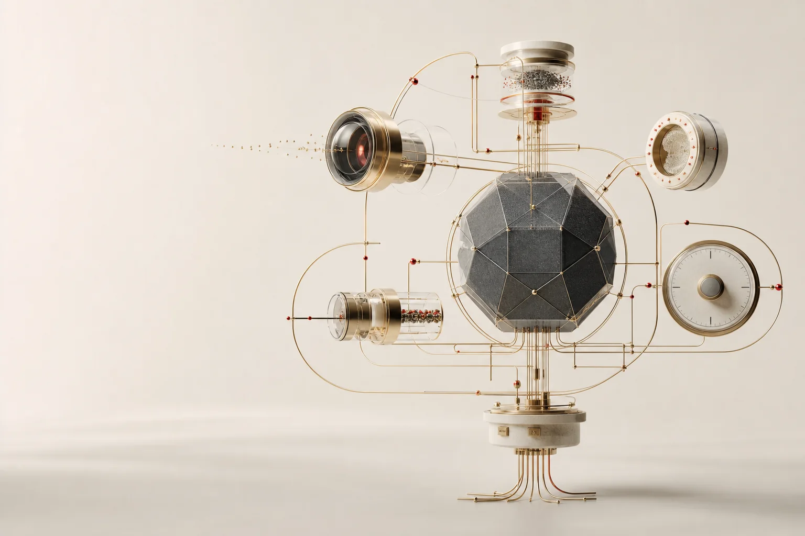

Wisdom Science studies whether AI systems improve after experience, failure, feedback, perturbation, and recovery, rather than only measuring first-attempt capability.
中文定位：参数变大不是 AI 落地的终点。真正缺的是可靠行动：证据、记忆、失败恢复、工作流、 分寸感、治理和复盘。
Public Launch Kit
Official links, daily research notes, claim boundaries, and public visuals for Wisdom Science and the Ouroboros Project.

Positioning
Wisdom Science studies whether AI systems improve after experience, failure, feedback, perturbation, and recovery, rather than only measuring first-attempt capability.
中文定位：参数变大不是 AI 落地的终点。真正缺的是可靠行动：证据、记忆、失败恢复、工作流、 分寸感、治理和复盘。
Official Links
The agent is not a brain. It is a body of perception, evidence flow, immunity, homeostasis, and bounded action.
Strong AI claims need replayable evidence, claim boundaries, manifests, and public audit paths.
Reliable AI needs representation search before action, especially under ambiguity and interference.
Failure residuals, evidence gates, bounded recovery, and reusable failure memory.
A public-facing summary of the current release rhythm, canonical links, and claim boundaries.
Do not frame the work as universal proof, detector SOTA, real-robot deployment, financial advice, medical validity, or autonomous enforcement.